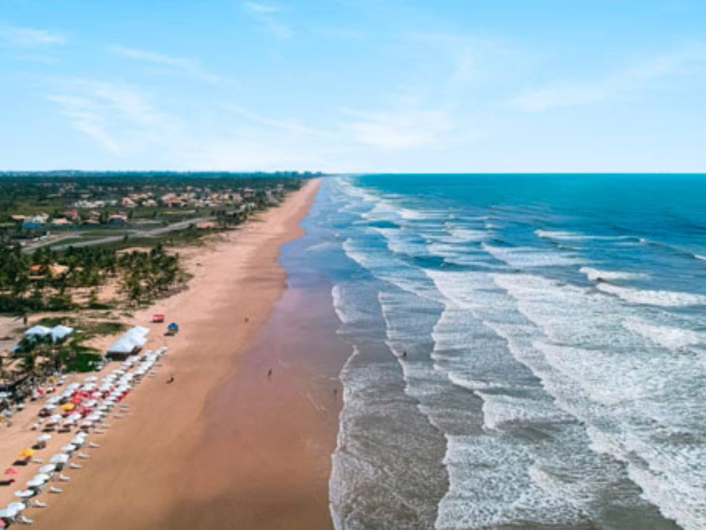

Sergipe é o menor estado do Brasil em extensão territorial, localizado na região Nordeste. Sua capital, Aracaju, é conhecida por ser uma cidade organizada, tranquila e com belas praias. O estado possui rica cultura popular, marcada por festas tradicionais, artesanato e manifestações folclóricas. Sergipe também apresenta importantes atrações naturais, como o Cânion do Xingó, um dos maiores cânions navegáveis do mundo. Sua economia é baseada no turismo, na agricultura, na pecuária e na exploração de petróleo e gás natural.

Voltar